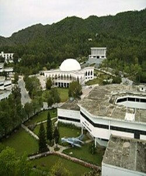
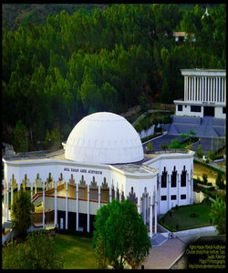

The Ghulam Ishaq Khan Institute of Engineering Sciences and Technology (Urdu: غلام اسحاق خان انسٹیٹیوٹ; commonly referred as GIKI), is a private research university located in Topi, Khyber Pakhtunkhwa in Pakistan. The institute has a 400-acre (1.6 km2) campus that is located in the vicinity of Swabi District.
It was founded by the former President of Pakistan, Ghulam Ishaq Khan, in 1993. Since its establishment, the institute has consistently attracted the country's most influential scientists such as Abdul Qadeer Khan, Asghar Qadir, and Shaukat Hameed Khan, who played a role in elevating the institute as one of world's finest science and engineering college.

The GIK Institute is a private educational institution, named after former bureaucrat and former President of Pakistan Ghulam Ishaq Khan. The project was delegated to Pakistani scientist, Dr. Abdul Qadeer Khan, who was one of the founding members of the institute and was once registered as an associate professor of physics.The genesis of the Institute can be traced back to the early 1950s when Mr. Ghulam Ishaq Khan (late) became acutely aware of Pakistan's dependence on foreign expertise and imported technology. Out of his frequent interaction with the foreign and local experts emerged the idea that a center of excellence in engineering sciences and production technology ought to be established in the country, a center whose standards of education are comparable to those of its counterparts in the advanced countries. The transformation of this idea into a practical proposition took place in December 1985 when the Benevolent Community Care and Infaq Foundation donated Rs. 50 million for setting up an institute in the Khyber Pakhtunkhwa for promotion of science and technology.
